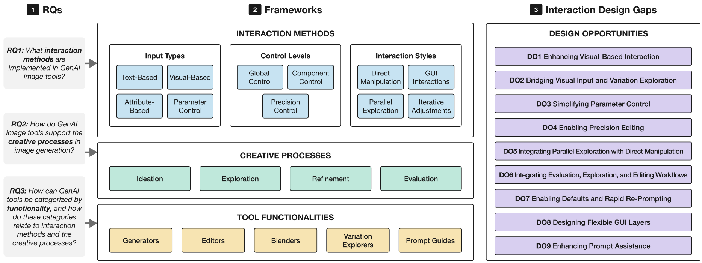

Interaction Methods in Generative AI Image Tools: A Review of Trends and Design Opportunities Across HCI and Industry

(opens in new tab)
Venue. CHI (2026)
Materials.
DOI(opens in new tab)
Abstract. Generative AI (GenAI) image tools are increasingly integrated into design workflows, prompting HCI research on their interaction methods and interfaces. We reviewed 37 such tools, including 28 HCI research systems and nine commercial systems (2022--July 2025), using three analytical frameworks: interaction methods, creative processes, and tool functionalities. We found that text prompts remain the dominant input method, while visual and attribute-based inputs---particularly in academic tools---are gaining traction and are often combined with text for refinement. Commercial systems emphasize parameter control, whereas academic tools focus on semantic attributes and visual organization. Most tools support ideation and exploration, but provide limited support for refinement and evaluation. Based on these findings, we identify nine design opportunities, including advanced visual interaction, simplified parameter control, precision editing, direct manipulation, workflow integration, default settings that support rapid exploration, and user guidance for later stages. We contribute a framework for analyzing GenAI interfaces and actionable directions for designing more usable, creativity-supportive GenAI image systems.
Link to this page: